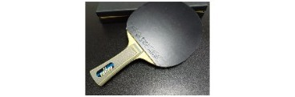

Elasticity, Hardness, and Core Wood for Amateur Blade Selection
Choosing a blade is not just about brand or price. For recreational players, three properties matter most in daily play: elasticity, hardness, and core wood. This guide explains how each one affects feel and control, and how to match them to your level and style.
For the broader buying checklist—speed, spin, control, feel, power, and reserve power—see Key Performance Metrics When Buying a Blade.
1. Elasticity

Everyone has a personal preference—some like a livelier blade, others prefer something calmer. Both are valid. In general, though, beginners should avoid blades that feel too springy. Less rebound usually means easier control and fewer unforced errors.
That is why many experienced coaches set kids up with older rubbers, lower sponge hardness, and no boosting: all of that keeps elasticity in check. Hand a beginner a top-tier setup—say, a Viscaria with Tenergy 05—and it may take a long time before they can actually manage the catapult. The equipment is simply too lively for them to "hold" the ball.
!!! tip "Practical takeaway" If you are still building basic consistency, prioritize control over maximum speed. You can always move to a livelier setup later.
2. Hardness
For amateur players who rely more on hitting than looping—backhand flicks, forehand drives, quick counters—a stiffer blade paired with softer rubber can work very well.
Today's mainstream pairing tends toward softer blades with harder rubbers, shaped around a two-wing looping style. That trend is real, but it does not have to match your game.
Even within the same model, weight and thickness change the feel:
| Example | Typical feel |
|---|---|
| Heavier / thicker version (e.g. ~95 g Fan Zhendong ALC) | Firmer, more direct |
| Lighter / thinner version (e.g. ~85 g Fan Zhendong ALC) | Softer, more forgiving |
There is no universal right answer. Let habit, experience, and small setup tweaks guide you.
3. Core Wood: Kiri vs. Ayous
Most of the core-wood conversation for amateurs comes down to two types: kiri and ayous.
Kiri core
- Favors play close to the table
- Feels more linear and predictable
- Suits fast attack and active blocking
Ayous core
- Favors mid-distance play
- Offers a stronger sense of power amplification
- Holds the ball longer for a better arc; generally stronger when playing from farther back
How fiber placement interacts with the core
Outer fiber + kiri core (e.g. Viscaria)
- At low force: slightly lively
- From medium force upward: once you adapt to the baseline rebound, it often feels less wild and easier to control
Inner fiber + ayous core (e.g. W968, Butterfly Innerforce series)
- At low force: calmer, less "shooty," easier to place
- At high force: the blade flexes more and the catapult shows up
So when a player says "this blade is too bouncy," the useful follow-up is: at what force level, and in what situation? Context matters.
A Modern Option for Beginners
In the celluloid era, pure-wood 5-ply or 7-ply blades were common beginner recommendations.
Today, inner fiber + kiri core builds are also worth considering for developing players, including:
- Harimoto Tomokazu Super ALC
- Donic Lind
- Himaojun Miao
- Donic True Carbon Inner — similar in spirit to the Lind, but with KLC instead of ALC, so a bit livelier. Chinese player Feng Yixin has used this type of setup.
Why this structure works
With fiber placed on the inside, these blades usually offer:
- Good arc and ball hold at low to medium force
- At full power, the kiri core keeps feedback linear with little sense of "drop-off"
- More controllable than many ayous-core alternatives in the same class
Trade-offs
The main limitation is absolute power at maximum effort. Whether that matters depends on your game:
| Playing style | Likely verdict |
|---|---|
| Frequent far-distance looping | May feel short on bottom-end power |
| Mostly close-to-mid distance | Usually fine |
You can also tune rubber choice to add a bit more punch and spin when needed.
The Bigger Picture
This family of blades fits a broader modern trend: stay as linear and stable as possible across different force levels, while keeping a balance between ball hold and acceleration.
If you pick one of these, give yourself a simple reminder on court:
!!! quote "Court-side reminder" Stay close. Don't drift back.
That one habit alone will make the setup feel much more capable than it does from deep off the table.